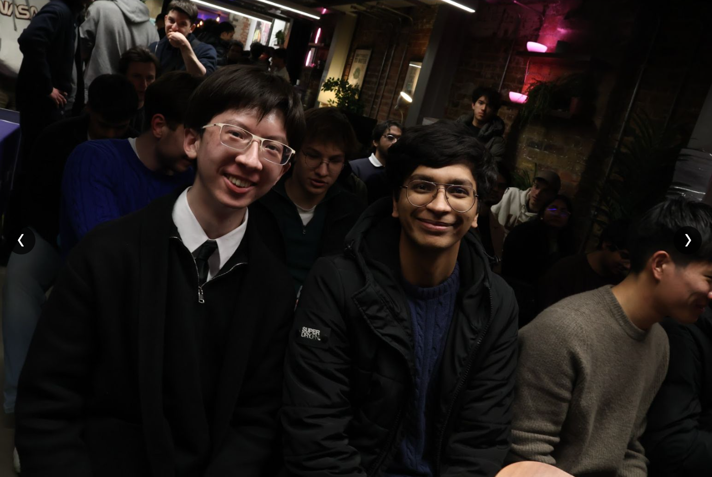

live network / train event model
TfL reliability
Elo leaderboard
Good service Minor delays Delays Severe delays / cancellations
reliability rating / all 11 lines
Elo against time, starting from the live model's 1500 baseline. Subsequent points are collected rating updates; the archive shows its original recorded history.
Candle chart
Five-minute buckets: open, high, low and close of the observed ratings. Empty periods have no candle.
Train events
Why score the Tube?
Each line earns or loses rating from observed train-stop outcomes. The original hackathon dashboard compared arrivals, late arrivals and inferred cancellations, with historical line and candle charts.
The live collector samples TfL predictions three times, 20 seconds apart, every ten minutes. An arrival estimate requires at least two sightings and a prediction within 30 seconds of the stop. A late estimate means the ETA slipped over 60 seconds since its first sighting. These are sampled prediction-based estimates, not confirmed train movements or official punctuality figures.
Disappearing predictions are not sufficient evidence of cancellation. The live cancellation column stays zero unless supported by a confirmed source. The original archive retains the original inferred cancellation counts and its historical model.
The live model uses the original event gain/loss function, with cubic gravity toward 1500 and hard bounds of 100 and 3500. Peak-time outcomes receive more weight. It is Elo-style, not a claim of standard zero-sum chess Elo.
Original hackathon project ? Original team source ? automated audit

built at quantihack 2026
a competitive league for the morning commute.
Built by Atul Kanodia and Benjamin Toze after qualifying for the finals through a five-day trading competition. We turned live TfL data into a leaderboard for all eleven Underground lines, then took the idea from a brainstorming session to a deployed dashboard during the hackathon.
Benjamin's postthe hackathon submission